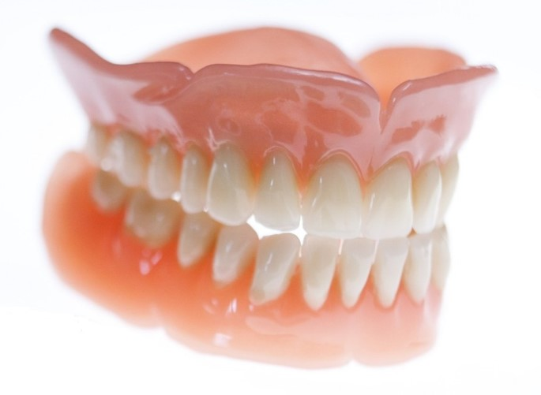
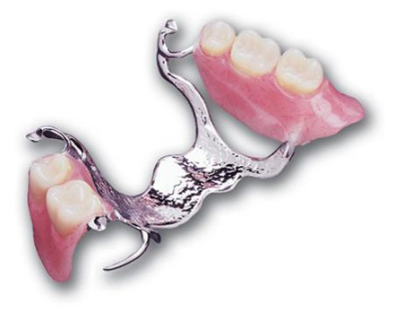
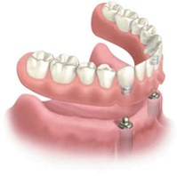

Dersom flere eller alle tennene mangler i en kjeve kan en tannprotese være løsningen. Vi skiller mellom hel- og delproteser.
Helprotese
Når alle tennene mangler kan en helprotese erstatte en tannløs kjeve. Helprotesen blir på folkemunne kalt gebiss. Musklene i ganen samt vakuumet som oppstår under protesen holder den på plass. Helprotesen lages i et plastakrylat-materiale av en tanntekniker etter at tannlegen har tatt et nøyaktig avtrykk av kjevekammen. Fremstillingen krever flere tannlegebesøk.

Immediat-protese
En immediat-protese er en helprotese eller delprotese som settes inn umiddelbart etter at de dårlige tennene er trukket ut. Det blir på forhånd tatt avtrykk av overkjeven og underkjeven. Avtrykket sendes til en tanntekniker som lager protesen. Fordelen med immediat-protesen er at man slipper å gå uten tenner etter at de er fjernet. Man vil imidlertid kjenne sårhet i kjeven den første tiden etter at protesen er satt inn. Dessuten vil kjevekammen gjennomgå endringer under tilhelingen, noe som gjør at immediatprotesen gradvis blir dårligere tilpasset. Dette kan løses ved at protesen fores (rebaseres) innvendig. Noen ganger vil det være nødvendig og lage en ny protese som passer de endrede forholdene.
Delproteser
Dersom man mangler noen av tennene i en kjeve kan disse erstattes av en delprotese. Fremstillingsprosedyren er den samme som for en helprotese. Delprotesen er avtakbar og sitter fast med små klammere til gjenstående tenner. Den består av et plastakrylatmaterialet på et metallskjelett i crom-kobolt. Den dekker deler av kjeven og kan ha synlig metall.

Verdt å vite om tannproteser
Det tar tid å venne seg til den nye protesen. Det er uvant både å spise og snakke med den. Videre vil det ta tid før muskulatur og slimhinner blir vant til den nye situasjonen. Det er helt normalt å få gnag i gommen, da må man oppsøke tannlegen for å slipe på den nye protesen.
Både hel- og delproteser må tas ut av kjeven for daglig renhold. Et godt renhold er helt nødvendig for å unngå kroniske irritasjoner på slimhinnene, samt infeksjoner og sopp i munnen. Protesen må pusses hver dag med myk tannbørste både innvendig og utvendig. I tillegg må man pusse gummer, gane og tunge. Det er en fordel at man tar protesen ut om natten. Da reduseres risikoen for soppdannelse i slimhinnen. Når protesen ikke er i munnen, bør den oppbevares fuktig, for eksempel i et glass med vann.
En protese er ingen engangs-anskaffelse. Gradvise endringer av kjeven gjør at protesen med tiden blir løsere og derfor fungerer dårligere. Det er da mulig å ”fore” den slik at den tilpasses de endrede forholdene. Ofte vil det likevel være bedre å fremstille en ny protese. Tidsintervallet for dette vil kunne variere fra person til person og må derfor vurderes individuelt.
Selv om man har helprotese, er det viktig at man går til tannlegen årlig for undersøkelse.
Tannløs underkjeve
Ny stønadsordning fra Helfo, gjeldene fra 1. Januar 2014 gir refusjon for to implantater med dekkprotese utført av tannleger med spesialkompetanse i implantatprotetikk. Denne kompetansen har både tannlege Gunnarsli og tannlege Nesse. Har du en tannløs underkjeve og en protese i undekjeven som ikke fungerer har du muligheten til og få 2 implantater og en implantatretinert protese med refusjon fra Helfo. For personer som i tillegg er tannløse i overkjeven, og som har behov for ny protese i den kjeven, dekkes også utgifter til slik protese.